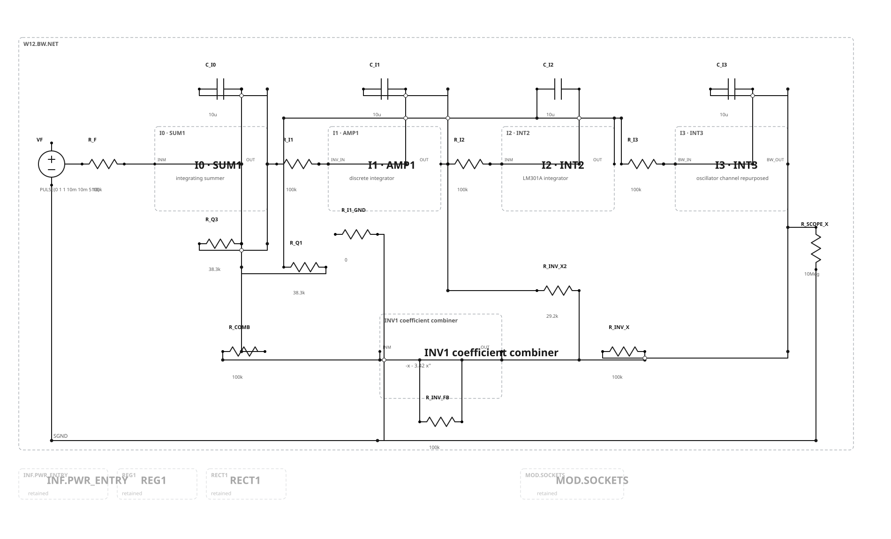
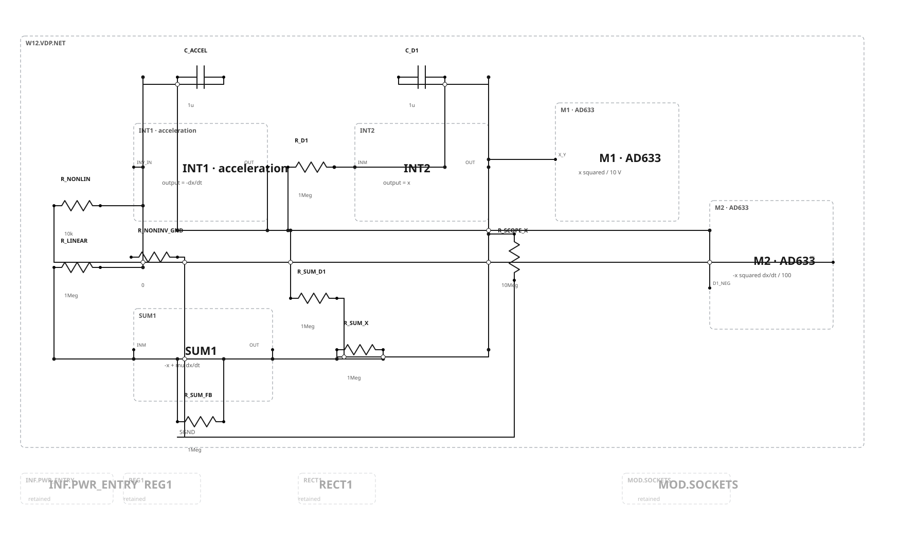
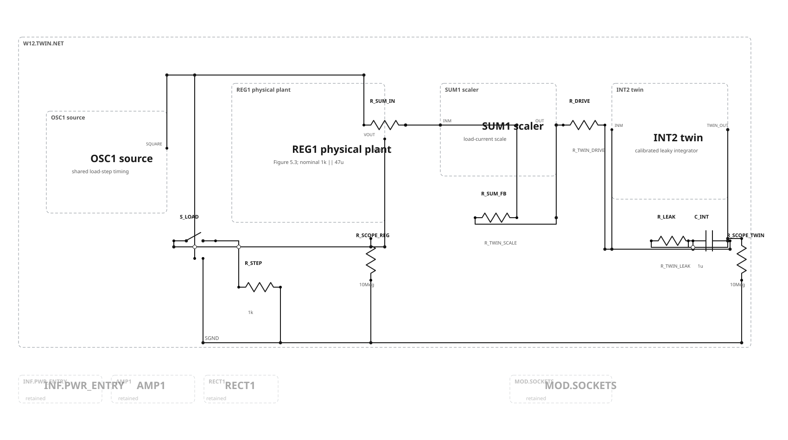

Figure 12.13 · fourth-order Butterworth
SUM1 becomes an integrating summer. AMP1, INT2, and the repurposed oscillator INT3 channel complete the four-integrator chain. INV1 forms the combined -x - 3.42x'' feedback term.

| Item | Selected value | Reason |
|---|---|---|
| Integrator resistance/capacitance | 100 kΩ / 10 µF | Uniform 10× impedance reduction from Roberge's 1 MΩ / 1 µF; RC remains 1 s |
| 2.61 coefficient branches | 38.3 kΩ, 0.1% | 100 kΩ / 2.61; final measured ratio should be trimmed |
| 3.42 coefficient branch | 29.2 kΩ, 0.1% | 100 kΩ / 3.42; final measured ratio should be trimmed |
| INT3 | Existing LM301A oscillator integrator | Oscillator timing branches open only in this configuration; channel is restored afterward |
Figure 12.14 · Van der Pol oscillator
The baseline uses mu=1 and one-second integrator constants. AMP1 produces -dx/dt, INT2 produces x, and SUM1 forms -x + mu dx/dt.

| Decision | Week 12 implementation |
|---|---|
| Primary multiplier | Two AD633 devices on ±15 V; manufacturer transfer W=(X1-X2)(Y1-Y2)/10V+Z |
| Why not Figure 11.28? | It is two-quadrant and cannot correctly multiply bipolar Van der Pol state variables |
| Historical alternative | Roberge Figure 12.9 time-division multiplier, deferred as a separate fully specified project |
| Initial condition | Use the accepted Week 11 reset hardware before RUN; the differential equation is undriven afterward |
| Manufacturer source | Analog Devices AD633 Rev. K data sheet |
Figure 5.3 · physical regulator and live analog twin
The same Week 6 oscillator controls a 1 kΩ physical load step and the analog-computer twin input. REG1 and the twin receive equal 10 MΩ measurement loads.

| Calibration quantity | Definition / component mapping |
|---|---|
K_DROOP | Measure |ΔVout|/ΔIload after the physical regulator settles |
TAU_MEAS | Extract the dominant first-order time constant from the physical load-step trace |
R_TWIN_LEAK | TAU_MEAS / C_TWIN, with selected C_TWIN=1 µF |
R_TWIN_DRIVE | R_TWIN_LEAK / (K_DROOP × I_SCALE) |
| Overlay acceptance | Compare steady droop, 63.2% time, settling, and residual waveform; document departures from the Figure 5.3 one-pole assumptions |
Gate and review decision
Approval accepts the three distinct graphs, selected AD633 implementation, Butterworth impedance scaling, symbolic regulator-twin calibration, and presentation. It does not approve quantitative performance or insert anything into the capstone.
| Gate | Status | Meaning |
|---|---|---|
| Graph/schema | PASS | Strict W11→W12 physical addition with three separate active configurations |
| SVG/SPICE connectivity | PASS | All three published pairs agree pin-for-pin/net-for-net |
| Visual inspection | PASS | Butterworth, Van der Pol, and twin sheets inspected after final projection |
| Ideal/realistic performance | BLOCKED | Multiplier model/error budget, twin measurements, and inherited failures remain unresolved |
Canonical authority: Week 12 graph. Protocol: case manifest. Decision: production record. Week 11 approval: acceptance record. Deferred projects remain: patch-cord drawings, permanent-infrastructure sheets, Figure 12.9 historical multiplier, and the separate low-voltage redesign.